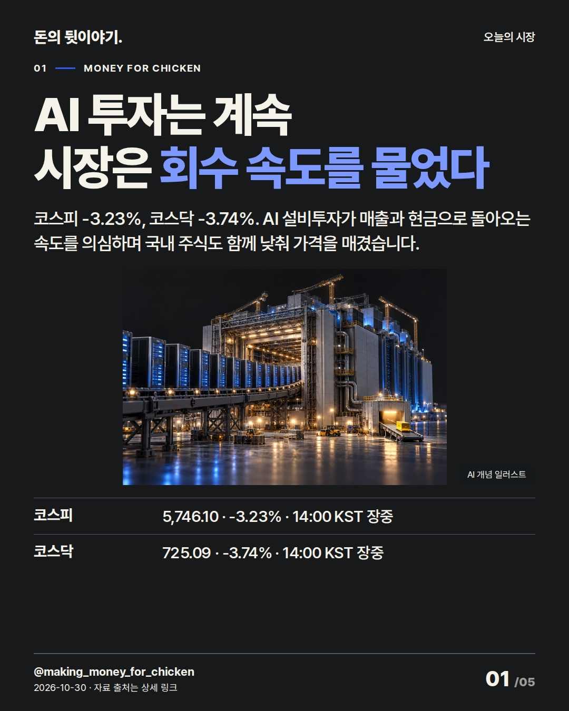
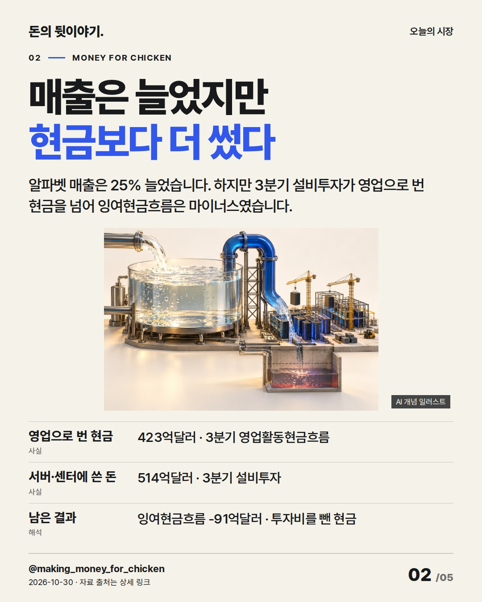
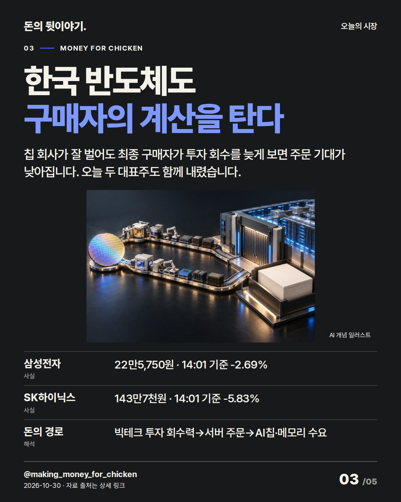
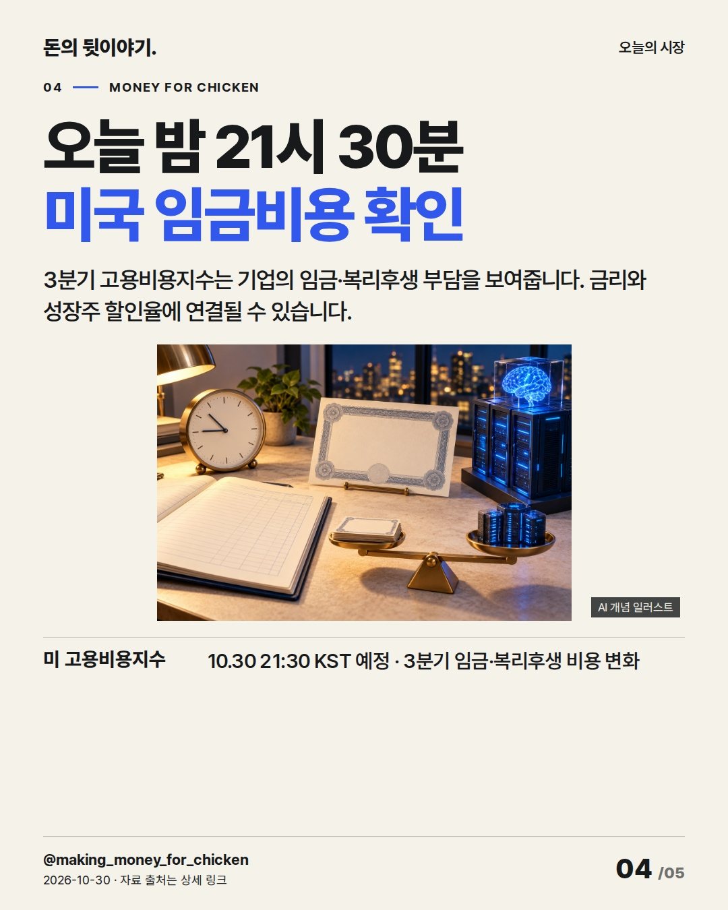
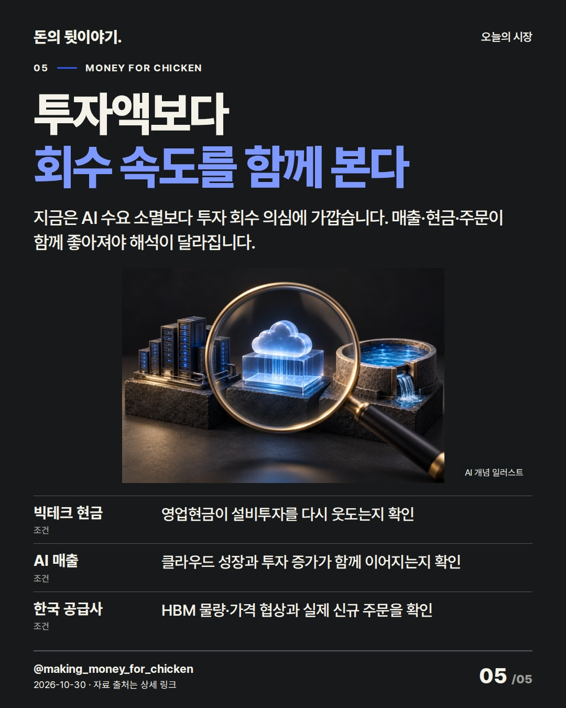

AI 투자는 계속되지만, 오늘 시장은 더 쓰는 속도보다 현금으로 돌아오는 속도를 물었습니다. 국내 반도체도 이제 빅테크의 투자액과 회수력을 함께 봐야 합니다. #코스피 #AI투자 #반도체

코스피 -3.23%, 코스닥 -3.74%. AI 설비투자가 매출과 현금으로 돌아오는 속도를 의심하며 국내 주식도 함께 낮춰 가격을 매겼습니다.
AI 생성 개념 일러스트 · 실제 현장이나 공식 제품 사진이 아닙니다.

알파벳 매출은 25% 늘었습니다. 하지만 3분기 설비투자가 영업으로 번 현금을 넘어 잉여현금흐름은 마이너스였습니다.
AI 생성 개념 일러스트 · 실제 현장이나 공식 제품 사진이 아닙니다.

칩 회사가 잘 벌어도 최종 구매자가 투자 회수를 늦게 보면 주문 기대가 낮아집니다. 오늘 두 대표주도 함께 내렸습니다.
AI 생성 개념 일러스트 · 실제 현장이나 공식 제품 사진이 아닙니다.

3분기 고용비용지수는 기업의 임금·복리후생 부담을 보여줍니다. 금리와 성장주 할인율에 연결될 수 있습니다.
AI 생성 개념 일러스트 · 실제 현장이나 공식 제품 사진이 아닙니다.

지금은 AI 수요 소멸보다 투자 회수 의심에 가깝습니다. 매출·현금·주문이 함께 좋아져야 해석이 달라집니다.
AI 생성 개념 일러스트 · 실제 현장이나 공식 제품 사진이 아닙니다.
{
"improvement": "최근 5편은 기업 실적·한 종목의 선택을 설명했고 직전 인텔편은 제품별 수요와 공장비용을 연결했습니다. 이번에는 국내 지수 하락을 ‘반도체 약세’로 끝내지 않고 빅테크 영업현금→설비투자→한국 공급사 주문의 돈 이동으로 설명한 한 가지를 개선했습니다.",
"reason": "불스토리(국내 브랜드) 10/17 공식 글 본문 전체·설명 이미지 2장은 투자 상향 자체보다 기대 초과와 HBM 협상을 나눴습니다. 프리즘 배재현 CIO 10/8 공식 스크립트 전체는 데이터센터 수요가 비용·전력 제약을 통과해야 한다고 설명했습니다. 두 곳의 Instagram 카드는 미열람했고 고유 문구·전망은 가져오지 않았습니다.",
"application": "초안 ‘AI 우려로 반도체 급락’→퇴고 ‘AI 투자는 계속되지만, 시장은 그 돈이 현금으로 돌아오는 속도를 다시 물었습니다.’ 2장에 알파벳 영업현금 423억달러와 설비투자 514억달러를 붙이고, 3장에 삼성전자 -2.69%·SK하이닉스 -5.83%가 최종 구매자의 회수력과 연결되는 경로를 보강했습니다.",
"avoided_repetition": "인텔편의 서버 공급 부족·PC 감산·공장 사고는 제외하고, 전일 오후편의 삼성 최대이익·설비투자 반복도 버렸습니다. ‘AI 붕괴’는 클라우드 매출 +103%가 반박해 제목 후보에서 탈락했습니다. 다음 편은 현금 회수와 실제 신규 주문의 시차를 같은 기간으로 비교합니다. 반응 지표는 미확보입니다."
}투자 참고용 · 매수·매도 권유 아님.